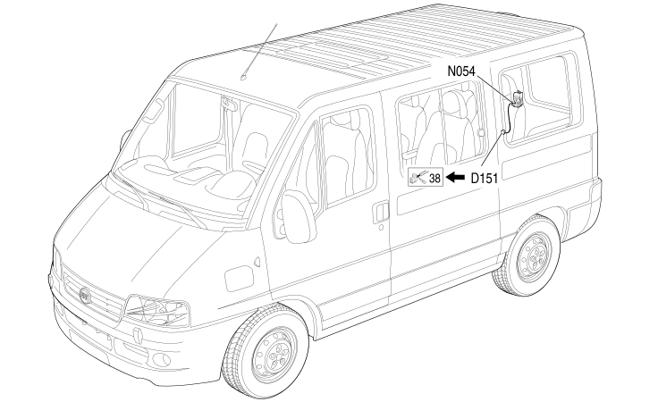

100 RIGHT SWING DOOR LOCK BRIDGE
- Path
- Electrical equipment > 2 WIRING > 100 RIGHT SWING DOOR LOCK BRIDGE
- Kind
- wiring harness
- Applies to
- all engines; all production periods; only with equipment: Minibus and Van and Panorama and Combi
- Interactive page
- https://sloeber94.github.io/elrnDB-fDct/en/#/244002291
Applies to: all engines; all production periods; only with equipment: Minibus and Van and Panorama and Combi
